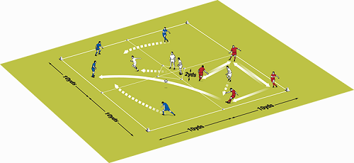
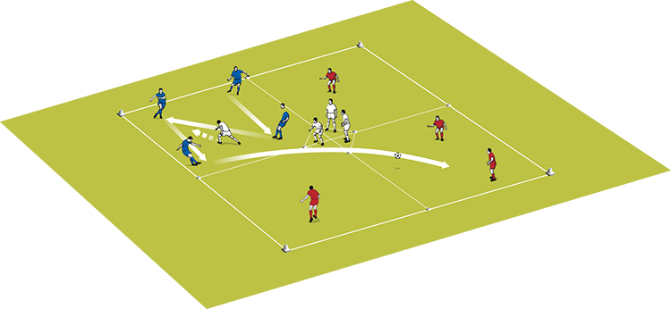

Four square - press the pack
This is a great session for getting players to pass with accuracy and speed
when under pressure which means on match days they are able to keep hold of the ball when pressed by the opposition.
Why join it
The session involves players being put under pressure, making quick decisions in tight areas and then trying to think ahead and reacting quickly to changing situations.
Set up the activity
You need balls, bibs and cones. Set up Set up a grid of four 10—10-yard boxes with a central 2—2-yard diamond.
We used 12 players in the session.
How to play it
Start with four defenders in the central diamond, a possession team of four in one box,
and another team of four split amongst the three remaining boxes.
The possession team must try to string five passes together under pressure from one of the defenders,
who joins from the central diamond.
When they have achieved five passes, the possession team pass into one of the other three squares,
where the other team of four join together to play against a new defender from the central area.
The original possession team disperse to the three unoccupied squares, and the first defender returns to the central diamond.
Play continues in the same manner. The defending team perform that role for two minutes before swapping with another team.
To intensify the pace, progress the activity by asking the possession team to play into another square after just three passes,
but the transferring pass must be first time.
Technique
The possession players need to concentrate and show you they are technically good.
Their passing has to be accurate and precise.
They also have to think ahead, knowing where they are going to play the ball before they receive it.
The defenders have to use a high tempopress and be prepared towork hard in short bursts.

1. Play a 4v1 in the squares – the target is 5 passes without the lone defender touching the ball
2. When the target number of passes have been reached the 4 players in the other squares join up in one square and a new defender comes from the central zone.

3. The first defender returns to the central zone and the 4 passers disperse across the three free squares4.
Defenders defend for 2 minutes then swap5. Progress the session by reducing the number of passes needed from 5 to 3 but the last pass must be first time.